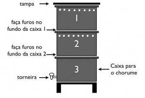

Os resíduos orgânicos gerados em uma residência são compostos basicamente
por restos de alimentos. A destinação adequada para o material orgânico é
a compostagem, um processo que degrada os alimentos até transforma-los em
um composto, que é livre de microrganismos patogênicos (causadores de
doença), não tem cheiro ruim e pode ser utilizado como adubo em hortas e
jardins.
Existem diversas formas de fazer compostagem, e nem é preciso ir tão longe,
você pode fazer sua própria composteira caseira que será capaz de degradar
boa parte dos orgânicos gerados na sua residência! Veja abaixo como construir
uma e suas indicações.
Passo a passo para construção da composteira domiciliar:
A composteira aqui indicada utiliza as minhocas californianas como principais agentes degradadores da matéria orgânica. Essa composteira é muito simples de ser confeccionada e utilizada:
Primeiramente é preciso se atentar à quais resíduos podem ser colocados na composteira.
Os itens que podem ser colocados na composteira, são:
- Frutas
- Legumes
- Verduras
- Grãos e sementes
- Borras de café
- Sachê de chá
- Restos de pão
- Cascas de ovos
- Alimentos cozidos (em pequena quantidade)
- Frutas cítricas (em pequena quantidade)
Não pode ser colocado:
- Carnes
- Peixes
- Laticínios
- Óleos e Gorduras
- Fezes de animais
- Líquidos
- Molhos de comida
- Limão
Essas recomendações são dadas devido ao tempo que esses alimentos demoram para se decompor e o tipo de compostagem que é feita na composteira caseira, sendo assim prejudicaria o processo e traria odores indesejáveis para o local.
Agora para montar a composteira é preciso:
- 3 tambores de ou recipientes com tampas.
- 1 torneira de jardim

- Devem ser feitos furinhos (com cerca de 6 mm ou 0,6 cm) no fundo das caixas 1 e 2, mostradas na Figura 56. Também é recomendável fazer pequenos furinhos no alto da caixa 1 e 2 para garantir a entrada de oxigênio na composteira. Sempre deve-se ter uma tampa na caixa do topo, impedindo a entrada de moscas e outros animais. Na caixa 3 deve-se colocar uma torneira cerca de 10 cm acima do fundo da caixa.
- Na caixa 1 é onde se coloca uma camada de terra ou composto inicial com as minhocas. Esse composto geralmente é obtido de outra composteira ou pode ser adquirido em locais que vendem as minhocas californianas. Essas minhocas conseguem comer maiores quantidades de material orgânico ainda fresco, acelerando o processo de compostagem, também são importantes para abrirem caminhos na terra permitindo a entrada do oxigênio que os outros microrganismos no processo de compostagem utilizam para respirar.
Caso você não queira utilizar as minhocas pode-se utilizar o composto fresco de outra compostagem ou de um adubo.
- Acima dessa camada de terra adiciona-se o material orgânico, ou seja, os restos de alimentos permitidos indicados anteriormente.
- Sempre após colocar os alimentos eles devem ser totalmente cobertos com uma camada de resíduo seco, como serragem, folhas secas ou grama seca. Isso garante o equilíbrio da umidade e dos elementos necessários para a degradação.
- Quando a caixa 1 ficar cheia pode ser trocada pela caixa 2, assim a caixa 1 ficará acima da 3 e abaixo da 2. O processo inicial é o mesmo, mas nesse caso pode-se colocar menos minhocas, pois as minhocas da caixa 1 irão subir em busca de mais alimentos na caixa 2.
- Depois de cerca de 60 dias o material da caixa 1 já estará pronto para ser utilizado como adubo.
- Durante todo esse processo as minhocas e microrganismos da caixa estão degradando o material orgânico e isso gera um líquido chamado chorume. O chorume irá passar pelas caixas e será armazenado na caixa 3. Essa deve ser esvaziada de 2 em 2 meses aproximadamente.
O chorume pode ser utilizado como fertilizante, mas antes precisa ser diluído na proporção de 1 parte do chorume para 10 partes de água, sendo assim a cada 1 ml de chorume deve-se ter 10 ml de água.